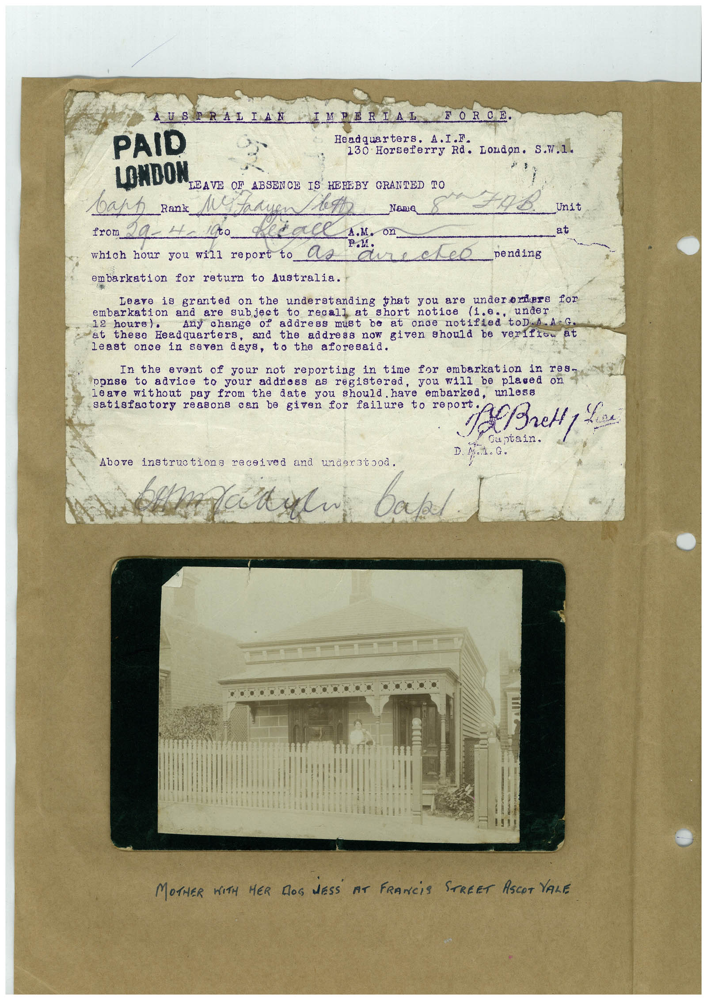

Book 1 · scan 002


Description
Transcription
Context
Review notes
Compare the machine draft with the scan. Handwriting and names need human review.
Artifacts
Edit the artifacts field in this note’s frontmatter to change these records. This summary is generated.
B01-S002-A01 — Typed document, Photo & Handwritten note — Book 1, scan 002
Types: Typed document, Photo, Handwritten note
Scope: Whole scanned page; individual items can be split out during review.
Caption: Not mapped yet.
Caption source: Not recorded yet.
Caption status: unmapped
Machine transcription
PAID AUSTRALIAN IMPERIAL FORCE. Headquarters. A.I.F. 130 Horseferry Rd. London. S.W.1. LOMDON LEAVE OF ABSENCE IS HEREBY GRANTED TO варр _Rank M. tadi Nama Unit from at which hour you will report to Ce aure eD pending embarkation for return to Australia. Leave is granted understanding that you are undererders for embarkation and are short notice (1.e.. under hours). address must be at once notified toD.a.AG. at these Eeadquarters, and the address now given should be verifio at least once in seven days, to the aforesaid. In the event of your not reporting in time for embarkation in res- to advice to your address as registered, you will be plased leave without pay from the date you should. have embarked, unlesa satisfaotory reasons can be given for failure to report A Bretty Lice. Captain. D. A 1. G. Above instructions received and understood. natal. bake ... MOTHER WITH HER DOS NESS AT FRANCiS STREET ASCOT VALE